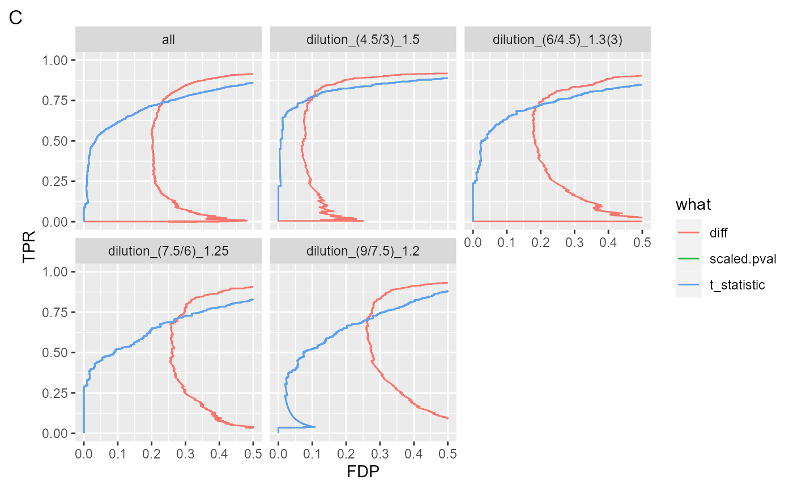

../vignettes/Benchmark_proDA_medpolish.Rmd
Benchmark_proDA_medpolish.Rmd
knitr::opts_chunk$set(echo = TRUE, warning = FALSE, message = FALSE)
evalAll <- require(proDA)## Loading required package: proDA## Registered S3 method overwritten by 'GGally':
## method from
## +.gg ggplot2## -- Attaching packages --------------------------------------- tidyverse 1.3.1 --## v ggplot2 3.3.5 v purrr 0.3.4
## v tibble 3.1.4 v dplyr 1.0.7
## v tidyr 1.1.3 v stringr 1.4.0
## v readr 2.0.1 v forcats 0.5.1## -- Conflicts ------------------------------------------ tidyverse_conflicts() --
## x dplyr::filter() masks stats::filter()
## x dplyr::lag() masks stats::lag()
datadir <- file.path(find.package("prolfquaData") , "quantdata")
inputMQfile <- file.path(datadir,
"MAXQuant_IonStar2018_PXD003881.zip")
inputAnnotation <- file.path(datadir, "annotation_Ionstar2018_PXD003881.xlsx")
mqdata <- list()
mqdata$data <- tidyMQ_Peptides(inputMQfile)
length(unique(mqdata$data$proteins))## [1] 5295
mqdata$config <- prolfqua::create_config_MQ_peptide()
annotation <- readxl::read_xlsx(inputAnnotation)
res <- add_annotation(
mqdata$data,
annotation,
fileName = "raw.file"
)
mqdata$config$table$factors[["dilution."]] = "sample"
mqdata$config$table$factors[["run_Id"]] = "run_ID"
mqdata$config$table$factorDepth <- 1
mqdata$data <- setup_analysis(res, mqdata$config)
lfqdata <- LFQData$new(mqdata$data, mqdata$config)
lfqdata$data <- lfqdata$data %>% filter(!grepl("^REV__|^CON__", protein_Id))
lfqdata$filter_proteins_by_peptide_count()
sr <- lfqdata$get_Summariser()
sr$hierarchy_counts()## # A tibble: 1 x 3
## isotope protein_Id peptide_Id
## <chr> <int> <int>
## 1 light 4191 31414
lfqdata$remove_small_intensities()
sr <- lfqdata$get_Summariser()
sr$hierarchy_counts()## # A tibble: 1 x 3
## isotope protein_Id peptide_Id
## <chr> <int> <int>
## 1 light 4178 29879
tr <- lfqdata$get_Transformer()
subset_h <- lfqdata$get_copy()
subset_h$data <- subset_h$data %>% dplyr::filter(grepl("HUMAN", protein_Id))
subset_h <- subset_h$get_Transformer()$log2()$lfq
lfqdataNormalized <- tr$log2()$robscale_subset(lfqsubset = subset_h)$lfq
lfqAggMedpol <- lfqdataNormalized$get_Aggregator()
lfqAggMedpol$medpolish()
lfqtrans <- lfqAggMedpol$lfq_aggTo use proDA, we need to create an SummarizedExperiment. We use the to_wide function of prolfqua to get the data in in the SummarizedExperiment compatible format.
library(SummarizedExperiment)
wide <- lfqtrans$to_wide(as.matrix = TRUE)
library(SummarizedExperiment)
ann <- data.frame(wide$annotation)
rownames(ann) <- wide$annotation$sampleName
se <- SummarizedExperiment(SimpleList(LFQ = wide$data), colData = ann)
se## class: SummarizedExperiment
## dim: 4178 20
## metadata(0):
## assays(1): LFQ
## rownames(4178): sp|A0A0U1RRL7|MMPOS_HUMAN sp|A0AVT1|UBA6_HUMAN ...
## sp|Q9Y6X9|MORC2_HUMAN sp|Q9Y6Y8|S23IP_HUMAN
## rowData names(0):
## colnames(20): a~10 a~11 ... e~15 e~16
## colData names(4): sampleName raw.file dilution. run_IdAs usual, two steps are required, first fit the models, then comptue the contrasts.
# Not Run
fit <- proDA(se, design = ~ dilution. - 1,data_is_log_transformed = TRUE)
contr <- list()
contr[["dilution_(9/7.5)_1.2"]] <- data.frame(contrast = "dilution_(9/7.5)_1.2",
test_diff(fit, contrast = "dilution.e - dilution.d"))
contr[["dilution_(7.5/6)_1.25"]] <- data.frame(contrast = "dilution_(7.5/6)_1.25",
test_diff(fit, contrast = "dilution.d - dilution.c"))
contr[["dilution_(6/4.5)_1.3(3)"]] <- data.frame(contrast = "dilution_(6/4.5)_1.3(3)",
test_diff(fit, contrast ="dilution.c - dilution.b"))
contr[["dilution_(4.5/3)_1.5"]] <- data.frame(contrast = "dilution_(4.5/3)_1.5",
test_diff(fit, contrast ="dilution.b - dilution.a" ))
bb <- bind_rows(contr)
# End Not Run## [1] 4178
ttd <- prolfqua::ionstar_bench_preprocess( bb , idcol = "name" )
benchmark_proDA <- make_benchmark(ttd$data,
contrast = "contrast",
toscale = c("pval"),
fcestimate = "diff",
benchmark = list(
list(sc = "diff", desc = TRUE),
list(sc = "t_statistic", desc = TRUE),
list(sc = "scaled.pval", desc = TRUE)
),
model_description = "proDA_medpolishInt",
model_name = "proDA_medpolishInt",
FDRvsFDP = list(list(sc = "adj_pval", desc = FALSE))
, hierarchy = c("name"), summarizeNA = "t_statistic"
)
sum(benchmark_proDA$smc$summary$name)## [1] 4178
sumarry <- benchmark_proDA$smc$summary
table_facade(sumarry, caption = "nr of proteins with 0, 1, 2, 3 missing contrasts.")| nr_missing | name |
|---|---|
| 0 | 4178 |
res <- benchmark_proDA$pAUC_summaries()
knitr::kable(res$ftable$content,caption = res$ftable$caption)| contrast | what | AUC | pAUC_10 | pAUC_20 |
|---|---|---|---|---|
| all | diff | 92.87074 | 66.41603 | 78.70522 |
| all | scaled.pval | 92.98494 | 72.56027 | 79.12634 |
| all | t_statistic | 92.98494 | 72.56027 | 79.12634 |
| dilution_(4.5/3)_1.5 | diff | 94.60603 | 81.30938 | 86.53649 |
| dilution_(4.5/3)_1.5 | scaled.pval | 94.19217 | 81.52594 | 85.09265 |
| dilution_(4.5/3)_1.5 | t_statistic | 94.19217 | 81.52594 | 85.09265 |
| dilution_(6/4.5)_1.3(3) | diff | 92.06327 | 66.70910 | 78.39964 |
| dilution_(6/4.5)_1.3(3) | scaled.pval | 92.10680 | 72.99345 | 78.92231 |
| dilution_(6/4.5)_1.3(3) | t_statistic | 92.10680 | 72.99345 | 78.92231 |
| dilution_(7.5/6)_1.25 | diff | 91.74481 | 58.60533 | 74.26991 |
| dilution_(7.5/6)_1.25 | scaled.pval | 92.07169 | 67.19119 | 75.01135 |
| dilution_(7.5/6)_1.25 | t_statistic | 92.07169 | 67.19119 | 75.01135 |
| dilution_(9/7.5)_1.2 | diff | 92.93932 | 57.97901 | 75.34347 |
| dilution_(9/7.5)_1.2 | scaled.pval | 93.50821 | 68.18139 | 77.57330 |
| dilution_(9/7.5)_1.2 | t_statistic | 93.50821 | 68.18139 | 77.57330 |
res$barpROC curves
#res$ftable
benchmark_proDA$plot_ROC(xlim = 0.2)plot ROC curves
benchmark_proDA$plot_FDRvsFDP()plot FDR vs FDP
benchmark_proDA$plot_FDPvsTPR()